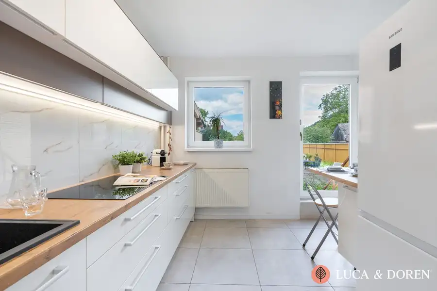
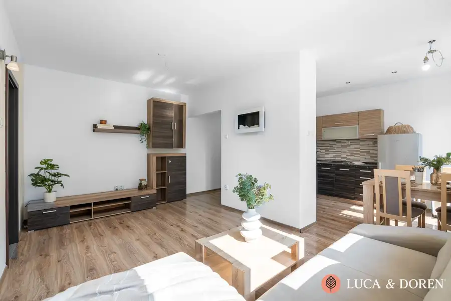

LUCA & DOREN | Na predaj | 2- izbový byt | Nová Dubnica | 58 m² | Zasklená lódžia + komora
Nová Dubnica
- Dispozícia2-izbový
- Plocha58 m²
- Poschodie1. z 14
- StavČiastočná rekonštrukcia
- Energetická triedaB
O nehnuteľnosti
Realitná kancelária Luca & Doren vám ponúka na predaj 2-izbový byt s 58 m² úžitkovej plochy, praktické dispozičné riešenie a dostatok priestoru pre pár, mladú rodinu aj ako investíciu na prenájom. Je pripravený na okamžité bývanie, no zároveň poskytuje novému majiteľovi možnosť postupne si ho prispôsobiť presne podľa vlastných predstáv.Veľkým benefitom je zasklená lodžia orientovaná do zelene, kde si môžete vychutnať rannú kávu či večerný oddych v príjemnom a pokojnom prostredí.Základné informácie:- úžitková plocha 58 m² (vrátane pivnice a komory)- zasklená lodžia- pivnica- komora na poschodí- výťahBytový dom:Byt sa nachádza v bytovom dome, ktorý prešiel v roku 2021 kompletnou revitalizáciou, vrátane:- novej fasády,- výmeny stúpačiek,- rekonštrukcie balkónov,- obnovy spoločných priestorov.Vďaka tomu nového majiteľa v najbližších rokoch nečakajú veľké investície do spoločných častí bytového domu.Technický stav bytu:Byt prešiel čiastočnou rekonštrukciou v roku 2008, počas ktorej bolo vymurované bytové jadro a zrealizovaná nová elektroinštalácia v kúpeľni, kuchyni a chodbe. Novému majiteľovi tak ponúka možnosť okamžitého bývania, pričom ďalšie úpravy si môže prispôsobiť podľa vlastného vkusu a potrieb.Dispozícia:Byt pozostáva zo vstupnej chodby, priestrannej kuchyne s jedálenskou časťou, svetlej obývacej izby s výstupom na lodžiu, samostatnej spálne, kúpeľne so sprchovacím kútom a WC. Praktickým bonusom je pivnica a komora nachádzajúca sa priamo na poschodí.Lokalita:Nová Dubnica patrí medzi najobľúbenejšie mestá regiónu. V pešej dostupnosti nájdete školy, škôlky, obchody, zdravotné stredisko, zastávky MHD aj množstvo zelene na prechádzky či športové aktivity. Ide o lokalitu, ktorá ponúka pokojné bývanie a zároveň všetko potrebné na každodenný život.Uvedená cena je konečná, pokiaľ sa zmluvné strany nedohodnú inak, a nenavyšuje sa o odmenu sprostredkovateľa. V cene je zahrnuté právne poradenstvo, vyhotovenie kompletnej zmluvnej dokumentácie, hypotekárne poradenstvo a úhrada správneho poplatku za návrh na vklad do katastra nehnuteľností.Lukáš Ciho LUCA & DOREN s. r. o. Tel.: +421 944 679 549 E-mail: ciho@lucadoren.sk
Parametre
| Cena vrátane energií | Nie |
|---|---|
| Druh | 2 izbový byt |
| Dátum zverejnenia | 9. 7. 2026 |
| Energetický certifikát budovy | B |
| Podlažie | 1 |
| Počet lodžií | 1 |
| Počet nadzemných podlaží | 14 |
| Počet pivníc | 1 |
| Rok výstavby | 1981 |
| Stav nehnuteľnosti | Čiastočná rekonštrukcia |
| Typ | Predaj |
| Typ konštrukcie | Panelová |
| Vybavenie | Lodžia, Pivnica |
| Úžitková plocha | 58 m² |
Kde to je


Mohlo by Vás zaujímať

DomNové10 237 555 €LUCA & DOREN | Na predaj | Rodinný dom po rozsiahlej rekonštrukcii | Trenčianska Teplá | Záhrada Trenčianska Teplá 136 m² Predstavte si miesto, kde ráno vyjdete s kávou do záhrady, cez víkend si odskočíte na wellness alebo kávu do Trenčianskych Teplíc a zároveň máte…
BytNové10 152 500 €LUCA & DOREN | NA PREDAJ| 3- izbový byt | Púchov | 62 m² | Slnečný byt s podkrovím Púchov 3-izbový62 m²1. podlažie Hľadáte byt, ktorý ponúkne tri samostatne využiteľné obytné miestnosti, dostatok priestoru a zároveň nevyžaduje veľké investície?LUCA & DOREN…